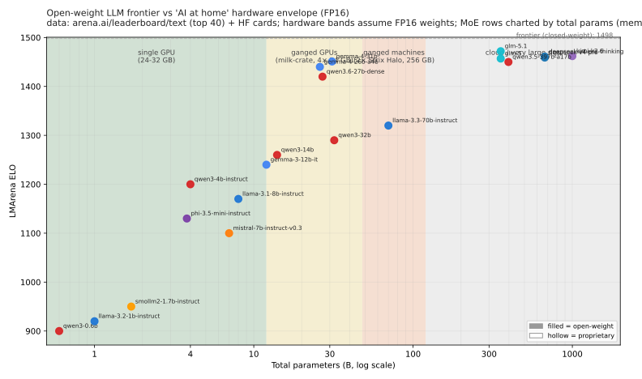
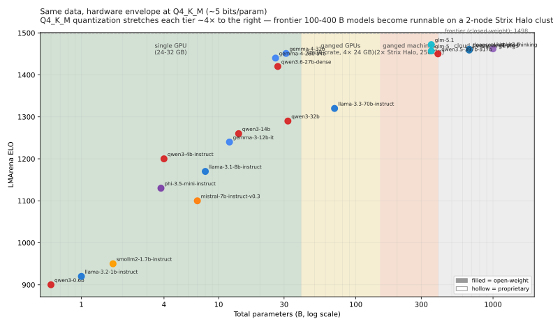
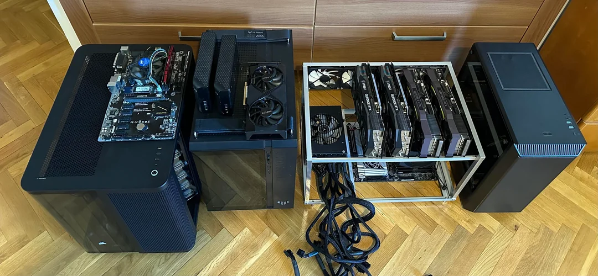

I. Background
Small Models at Home
To run an AI model yourself, on your own hardware, you basically need one thing- lots of fast memory. At price-points accessible to the 'AI at Home' crowd, this generally means a gaming GPU (or an Apple M-series device- more on that later). However, for unknown reasons- inexplicable by consumer demand- these max out at 32GB of VRAM (48GB if you buy one from a chinese factory made from recycled chips on a custom PCB).
One problem- 32GB puts you squarely in the 'Small' category. Looking at the current open-weight LLM frontier, you can carve the chart into three regimes by hardware envelope: what fits in roughly 32GB on a single consumer GPU, what fits on a ganged set of consumer GPUs ("milk-crate"), and what only fits when you gang together multiple machines:

That's at FP16. 4-bit quantization (Q4_K_M) buys you roughly 4× more model in the same memory, which is enough to bring the frontier 100-400 B open-weight models into reach of the ganged-machines tier:

If we want to make it out of the "Small Model" bracket without paying the quality cost of aggressive quantization, we're going to have to use multiple devices in parallel:

Like in Proof-Of-Work crypto-mining days of yore, enthusiasts (hint: it's the same people) are assembling 'milk-crate' rigs consisting of used GPUs: usually NVidia 3090s - depending on local availability- around $1000-1500. With 24 GB GDDR VRAM each, four of them together make a ~$5k system that will run medium-sized open-weight AI models pretty well. It's a cheap way to wire up some of the best value-for-money FLOPs on the market for those with the skills and time, but in the same way that "Grandma- you need to remember your 24-word seed phrase otherwise you lose all your bitcoins" was never going to happen- I very much doubt that "Grandma- you need to make sure you have re-timers on your risers otherwise they won't train at Gen4 speeds" will ever be a thing either. Retimers are little signal-cleanup chips that make long PCIe risers behave at high speed; needing to know that is exactly the point. These rigs are noisy and hot, unreliable and the idea that even 1% of people would want one of these in their home seems generous.
So where does that leave the non-technical, left out of the AI revolution? Forced to lease capacity- access-gated and data-mined- quantized and ad-injected? On someone else's hardware? We can look back at how console manufacturers made video games truly mainstream- mostly by wrapping the now- mass-produced and commodified PC hardware in a plastic box with simple, user-friendly interface. It seems clear that if self-sovereign, owner-operated AI is going to be the norm, we need commoditized consumer-grade hardware.
This is the Hellas hardware problem in miniature: if people are going to run useful AI compute wherever they are, cheap local machines need to compose. One 128GB box is interesting. Two, four, or eight boxes connected by a fast local fabric start to look like independent AI infrastructure.
With console sales in the tens of millions per year, consumer electronics companies have been able to leverage their economies of scale to commission brand-new architectures, optimised to deliver the best performance for the particular task of showing graphics on a screen. Unlike a regular desktop PC which could expect to spend much of it's life displaying a static desktop or spreadsheets- a console would spend most of it's life displaying video graphics- so it makes sense to allocate more of the bill-of-materials to the GPU, rather than the CPU. One of the most expensive components of a console is memory, and most of the 2005-era console used two separate memory buses feeding the CPU and GPU. The Xbox was different- it had a cheaper but higher-performing design which shared a single high-bandwidth GDDR memory bus between the CPU and GPU. The following generation all consoles used this design, and we can see echos of it in contemporary 'consumer vram' hardware:
Medium-sized Models at Home
| Platform | Memory (bandwidth) | Price (128 GB + 4 TB) |
|---|---|---|
| Apple Mac Studio (M4 Max, 40-core GPU) | 128 GB unified, 546 GB/s | $4,699 |
| NVIDIA DGX Spark Founders | 128 GB LPDDR5X-8533, 273 GB/s | $3,999 |
| AMD Strix Halo mini-PC (Corsair AI Workstation 300) | 128 GB LPDDR5X-8000, 256 GB/s | from $2,499 |
This year, NVidia, AMD, and Apple all released 'AI at Home' devices with up to 128GB of low-cost, low-power 'unified memory'- enough to perform inference on medium-sized models, albeit slowly.
On a single Strix Halo box, that 128 GB of unified memory translates to a useful menu of models for one-at-a-time interactive use — comfortably so for sparse MoE checkpoints, and just barely so for the largest dense models that fit:
| Model | Backend | Single-stream throughput |
|---|---|---|
| Gemma-4-26B-A4B (bf16, MoE, ~52 GB) | vLLM, concurrency 1 | ~21 tok/s (~27 at concurrency 2) |
| Qwen3.6-27B Q4_K_XL (dense, ~17 GB) | llama.cpp Vulkan, single stream | ~9 tok/s baseline, ~12 with MTP |
Sparse activation is doing exactly what it's supposed to here: a 26 B-parameter MoE with ~4 B active decodes at more than twice the rate of a similarly-sized dense model, despite occupying 3× the memory.
Performance is not magic- live-assistant or coding-agent workloads can still feel sluggish, for example, but this is clearly in the realm of 'working' for many use cases, and it's undeniably exciting and empowering to be able to run this on hardware you own and control.
Unfortunately- the last part of that rules out our best-performing device- since Apple devices can only be used with their own closed-source OS- the user remains at best, a guest on Somebody Else's Computer- an expensive one at that.
NVidia is not much better- their GPUs have required closed-source binary drivers for decades, even basic functionality like turning on and clocking up would not work under linux without a closed-source driver.
By process of elimination, we have our champion: AMD's Strix Halo platform - cheap and cheerful, open-source drivers that work with linux out of the box. I bought a couple of these when they were first released for around $1800 each, think they've only gone up in price since.